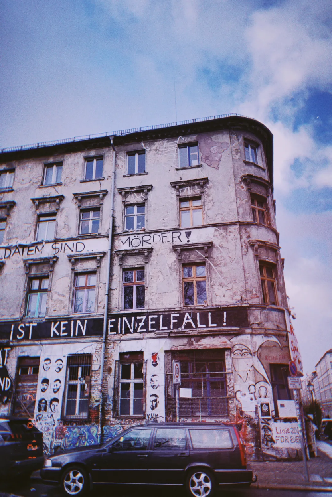
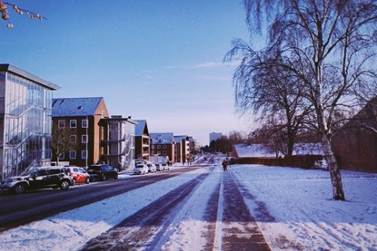

窗外的烟花放得格外得早。在丹麦朋友提醒我北京时间已经是1月1日之后，我才意识到，原来我的2021年早就过去了，我只是偷来了7小时的光阴而已。
The fireworks outside the window were set off very early. After my Danish friend reminded me that Beijing time is already January 1st, I realized that my 2021 has already passed, and I just stole 7 hours of time.
拿外卖碰到室友。他说，你终于结束旅行回来啦，这两周你都去了哪些地方？ “柏林，慕尼黑，布拉格，布达佩斯。” 说出这些名字的时候，我好像才刚启程去柏林。
I ran into a roommate on the way out to get takeaway. He asked, you finally came back from your trip, where have you been in the past two weeks? "Berlin, Munich, Prague, Budapest." When I uttered these names, it seemed as though I had just left for Berlin.
告别室友，走在过去四个月踩踏过无数次的小路上。 昏暗的路灯本该让这条狭窄的通道显得瘆人，但燃放的烟花此起彼伏，我倒也不觉得害怕和孤独。
Saying goodbye to roommates and walking down the path that has been trampled countless times over the past four months. The dim street lights were supposed to make the narrow passage look scary, but the fireworks set off one after another, and I didn't feel scared and alone.
许多人庆祝新年，但新年对我来说并没有什么意义。 今天和明天并不会有什么本质的区别，就如同昨天和今天一样。
Many people celebrate the new year, but the new year means nothing to me. There is no essential difference between today and tomorrow, just like yesterday and today.
2021年的第一天，我正读完维克多·弗兰克尔的《活出生命的意义》。 全书围绕着一个主题，那就是“选择的自由”。不论我们是身处于苦难环境，还是正在遭受心灵摧残，我们一直都拥有着选择的自由。我们可以选择在苦难环境下坚守原则，坚信这样的痛苦只是“临时的存在”，也可以选择放弃对道德和精神的内在把握，自甘堕落；我们可以选择在一段给自己带来伤害的关系里艰难前行，也可以选择随时纠正一段让自己感到不适的亲密关系，构建新的关系网。
On the first day of 2021, I'm finishing reading Man's Search for Meaning by Viktor Emil Frankl. The whole book revolves around one theme, "Freedom of Choice". Whether we're in a difficult situation or suffering from a broken heart, we've always had the freedom to choose. We can choose to stick to our principles in a miserable environment, believing that such pain is only a "temporary existence", or we can choose to give up our inner grasp of morality and spirituality, and let ourselves fall; we can choose to be in a relationship that brings harm to ourselves You can also choose to correct an intimate relationship that makes you feel uncomfortable at any time and build a new relationship network.
2021年的最后一天，我读完了卢梭的《一个孤独漫步者的遐想》。 里面有一句话我很喜欢，“我从来不认为人的自由在于想做什么就做什么，而是在于想不做什么就不做什么。”这让我想起了《风吹麦浪》里面的一句台词，“你很容易知道自己反对的是什么，却很难知道自己支持的是什么。”
On the last day of 2021, I finished reading Rousseau's Reverie of a Solitary Wanderer. There is a sentence in it that I like very much, "I never thought that a person's freedom lies in doing what he wants, but in not doing what he wants." This reminds me of a line in "The Wind that Shakes the Barley "film - It's easy to know what you're against, but it's hard to know what you're for.
这两本书似乎贯穿了我一年的心境。
These two books seem to run through my mood throughout the year.
回看2020年总结，我发现关键字在于“选择”。如果要精简2021年，那我想关键字一定是“规避”。
Looking back at the 2020 summary, I found that the keyword is "choice". If you want to streamline 2021, then I think the keyword must be "avoidance".
2020年我最大的收获就在于变得自我，不再那么关注别人对自己的看法，也不再根据大众的眼光和意见来调整自己的选择。我只做会让自己快乐的事情。但是说到底，做决定只在一瞬间，情绪上头的快乐只是暂时的，很多时候对自己的决定也会感到迷茫，依旧不知道自己热爱什么，想追求什么。
The biggest gain for me in 2020 is to become myself, not to pay so much attention to what others think of myself, nor to adjust my choices according to the eyes and opinions of the public. I only do what makes me happy. But at the end of the day, decision-making is only for a moment, and the emotional happiness is only temporary. Many times I feel confused about my decision, and I still don’t know what I love and what I want to pursue.
2021年在随性的基础上多了一丝肯定，这种肯定并不是坚定了自己的追求目标，而是不再执着于一个明确的方向，试图靠着排除法来过我的人生。虽然听着跟大海捞针一样，但如果我一直找不到自己的追求， 那么只要我的一生都在规避可能会让我被迫做选择的事情，这个朝向就是正确的。
In 2021, there will be a little more affirmation on the basis of randomness. This affirmation is not to strengthen my pursuit of goals, but to no longer cling to a clear direction and try to live my life by means of elimination. It sounds like looking for a needle in a haystack, but if I never find my pursuit, then as long as I spend my life avoiding things that might force me to choose, this is the right direction.
或许我这一辈子都找不到我愿意为之奋斗终身的事情，但那又有什么关系？我的人生不是为了达到那个顶端，或者就算我想达到那个顶端，也需要运气加成。我假定自己没有那样的运气，人生就此打住了吗？
Maybe I can't find anything in my life that I'm willing to fight for my whole life, but what does that matter? My life is not about getting to that top, or even if I want to get to that top, I need a bonus luck. I assume I don't have that kind of luck, does life come to an end?
一直保有希望，一样能获得快乐。
Always keep hope can also be happy.
但即便保有希望，我也疲于将新年计划安排得满满当当。
But even with hope, I'm tired of packing my New Year's resolutions.
斯科特·派克在《少有人走的路》中写过，“生活就是在你规划好的事情之外发生的事情。”我一直拿此作借口来避免为我的来年做计划。
Scott Pike wrote in "The Road Less Traveled", "Life is what happens outside of what you plan." I've been using this as an excuse to avoid planning for my coming year.
我应该是个将享乐主义发挥到极致的人，只关注当下的每一分每一秒。就好像丹麦的新年还未到来，而这一刻的烟花好美，其他我什么都不想。
I should be someone who takes hedonism to the extreme, focusing only on every minute and second of the moment. It's as if the Danish New Year has not yet come, and the fireworks are so beautiful at this moment, I don't think about anything else.